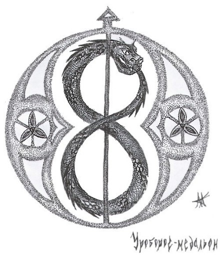
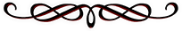

Почему, Уроборос?
Баллада (отрывок)
Пять коней подарил мне мой друг Люцифер
И одно золотое с рубином кольцо,
Чтобы мог я спускаться в глубины пещер
И увидеть небес молодое лицо.
Много звездных ночей, много солнечных дней
Я скитался, не зная скитаньям конца.
Я смеялся порывам могучих коней
И игре моего золотого кольца.
Кони фыркали, били копытом, маня
Понестись на широком пространстве земном.
И я верил, что солнце зажглось для меня,
Просияв, как рубин на кольце золотом…
Н. Гумилев

Змея, поедающая свой собственный хвост, не является специфически вампирским символом, и традиционно не вызывает подобных ассоциаций.
Это очень старый символ. В алхимии он символизировал процесс бесконечности, использовался в европейской геральдике и в искусстве. У самих алхимиков, а также у приверженцев гностицизма значение «Уробороса» связано с идеей времени: ход времени сопровождается разрушением, поскольку прошлое как будто безвозвратно теряется, то есть время пожирает само себя. Как и в индуизме, змей ассоциируется с циклами в жизни человека, в природе и во всей вселенной. В алхимических манускриптах встречается также эмблема, на которой изображен ребенок, рука которого покоится на черепе. Ребенка обвивает змея, свернувшаяся в кольцо и кусающая свой хвост. «Уроборос» заключает в круг два символа крайних полярностей сотворенного мира - ребенка - и символ смерти - череп. Взятая как единое целое, эта эмблема может быть истолкована так: "В моем начале заложен мой конец". В алхимической картине мира змея играет роль символа циклически протекающих процессов (испарение, конденсация, испарение – в многократном повторении), причем стадия сублимации часто обозначается крыльями. Это символ циклической природы Вселенной: создание из уничтожения, жизнь из смерти. Уроборос поедает свой собственный хвост, чтобы пройти через полный цикл восстановления из смерти.
Давайте рассмотрим поближе два компонента символа: это сам зверь и круг, который этот зверь образует, пожирая самого себя. «Уроборос» иногда изображали, как змея, иногда, как дракона или червя, обозначающего знание, мудрость, дисциплину, силу, осведомлённость – и вообще сам мир. В западной традиции среди интерпретаций Библии, этот зверь (в обычной своей форме или без оной) ассоциировался с Сатаной и воплощал дихотомию правды и лжи, покорности и гордыни, независимости и мятежа, невинности и опытности, отчаяния и воодушевления. Он был, как Прометей, укравший огонь с Олимпа. Дерзкий и непокорный символ.
Изображение змеи, кусающей собственный хвост, впервые было обнаружено в Египте. Позже этот символ стал встречаться у венецианцев и древних греков, которые и дали имя этой змее – «Уроборос», что в переводе означает «пожирающая свой хвост».
«Уроборос» не только использовали традиционные астрологи. Концепцию «мирового змея» имели кельты, североамериканские индейцы и племена Мезоамерики.
Змея, кусающая свой хвост, встречается и в мифах, например в норманском мифе о змее Йормунгарде (Митгарде), и в Индии, где дракон обвивает черепаху, на которой стоят четыре слона, несущие мир. Альтернативные названия змей: Ороборус, Уроборос, Оуреборос.
Символ может восприниматься, как упрощённое изображение лабиринта. Каждый обязан пройти его и найти выход. Блуждать можно бесконечно. А выход есть только один. Каждый поворот и жизненный изгиб судьбы указывает нам правильное направление. В который раз природа сама даёт нам подсказку.
Мнений и интерпретаций множество. В даосизме и в концепциях Дзен этот символ обозначает наполненность, которая является воплощением сатори (т.е. нирваны). В тантрических практиках змей олицетворяет женское начало. Он также представляет стихию земли. В нашей вампирской интерпретации этот символ может обозначать «маленькую смерть» или CONDITIO SINE QUA NON (кондицию синэ ква нон, латин. "условие, без к-рого нет "), универсального Донора. Мужское и женские начала в вампире объединены в одно целое. Змей является единым представителем обоих гендеров. Он представляется как базовый архетип – служащее началом человеческой индивидуальности единство мужского и женского, положительного и отрицательного, когда «Я» погружено в бессознательное, из которого еще не отдифференцирован сознательный опыт.
Само кольцо, как замкнутая окружность, символизирует целостность и единство. Оно не имеет ни начала, ни конца, поэтому часто ассоциируется с вечностью и бесконечностью. Его центральное отверстие - это место прохождения небесной силы, божественного дыхания. Кольцо символизирует связь, союз или обет. Геракл с разрешения Зевса освобождает от цепей прикованного титана Прометея, похитившего для людей огонь с Олимпа, но на руке Прометея остается железное кольцо с осколком скалы Кавказа. С тех пор титан вынужден был носить это кольцо в знак повиновения громовержцу.
Кольцо напоминает нам открытый и голодный рот или открытость вообще. Это жизненный цикл, особая мандала, которая является олицетворением индивидуализации.
Я люблю все ассоциации, который вызывает этот символ, потому что почти все они возникают у меня в процессе вампирского питания. Но прежде всего мне нравится то, что он олицетворяет саму жизнь. Я визуализирую его в тяжёлых жизненных ситуациях, особенно, когда я чувствую себя потерянным в вамп-субкультуре. «Уроборос» помогает объединять кусочки в единое целое, укреплять чувство независимости и самодостаточности. Сам круг может представлять особую пищевую цепь, свёрнутую в виде спиральной лестницы. Те, кто находятся на самом верху, умирают и, в свою очередь, становятся пищей для бактерий. Мы все равны перед всевидящим оком Природы. Как глупо со стороны вампиров (или людей – хотя, вампиры тоже люди!) считать себя имеющими превосходство. Отчуждающиеся и индифферентные создания не смогут питаться. Хищники в результате всегда пожрут самих себя. Вы не избежите этой цепочки, как не избежите своего Предназначения.

[Добавлено - прим. Регент]
Уроборос, ороборос (от греч. ουρά, «хвост» и греч. βορά, «еда, пища»; букв. «пожирающий [свой] хвост») — мифологический мировой змей, обвивающий кольцом Землю, ухватив себя за хвост. Считался символом бесконечного возрождения, одним из первых символов бесконечности в истории человечества. Также было распространено его изображение не в виде кольца, но в виде «восьмерки». Алхимический символ.
Символизирует совокупность всего, изначальное единство, самодостаточность. Порождает сам себя, сам с собой соединяется в браке, сам себя оплодотворяет, и убивает. Символизирует цикл утраты и восстановления целостности, силу, которая вечно сама себя тратит и возобновляет, вечную цикличность, цикличность времени, бесконечность в пространстве, истину и познание в одном лице, соединение двух прародителей, андрогина, первобытные воды, тьму, предшествовавшую творению, замкнутость вселенной в хаосе вод до прихода света, потенциал до его актуализации. Изображения уробороса на надгробиях символизируют бессмертие, вечность и мудрость. Во многих мифах он обнимает собой весь мир и отождествляется с круговым течением вод, окружающих землю. Он может поддерживать мир и его существование, и в то же время, он вносит смерть в жизнь, и жизнь в смерть. Недвижимый внешне, он олицетворяет вечное движение, вечно возвращаясь к самому себе. Вместе с уроборосом часто изображаются Альфа и Омега.
Честь изобретения уробороса традиционно приписывается египтянам эпохи Среднего Царства, хотя в Китае обнаружены сходные артефакты, датированные третьим тысячелетием до н. э. По мнению ряда исследователей, толчком к созданию символа послужила форма галактики Млечный Путь.
В индуистских мифах фигурирует змей, обвивающий в кольцо черепаху, на спине которой стоят четыре слона и держат на себе мир. В скандинавской мифологии форму уробороса принимает гигантский мировой змей Ёрмунганд, когда он обвивает Землю в кольцо, кусая себя за хвост. Образ уробороса был распространен также в ацтекской, индейской и китайской мифологии.
Христиане рассматривали уроборос в качестве символа конечности и бренности подлунного существования, которое, в конечном счете, поглощает самое себя. В настоящее время, это один из основных символов Унитарианской церкви Трансильвании. Для сатанистов же уроборос — это один из атрибутов Зверя (Левиафана).
Знаменитый английский алхимик и эссеист сэр Томас Браун (1605—1682), перечисляя тех, кто умер в день рождения, изумлялся тому, что первый день жизни столь часто совпадает с последним и что «хвост змеи возвращается к ней в пасть равно в то же время». Немецкий химик Фридрих Август Кекуле (1829—1896) утверждал, что приснившееся ему кольцо в форме уробороса натолкнуло его на открытие циклической формулы бензола.
Карл Юнг называет уроборос базовой мандалой алхимии, одним из основных архетипов и символом бессмертия, увязывая его с диалектикой сознательного и бессознательного в душе человека.

Автор: Sarah Dorrance.
Источник: sanguinarius.org

Перевод, комментарий, редактирование: Abyah.
(переведено на realvampires.do.am, отредактировано на vampirecommunity.ru)
(с) Библиотека о настоящих Вампирах
realvampires.do.am
[Наверх]